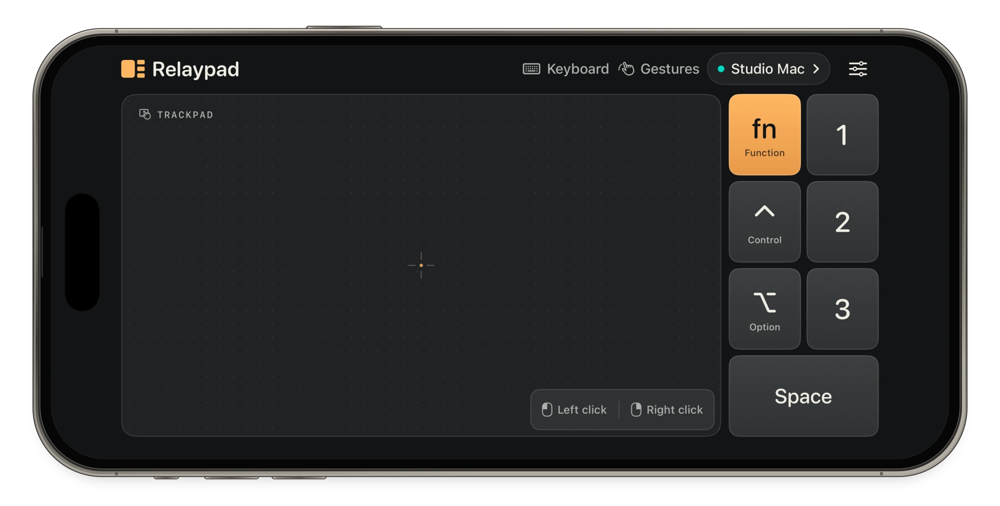
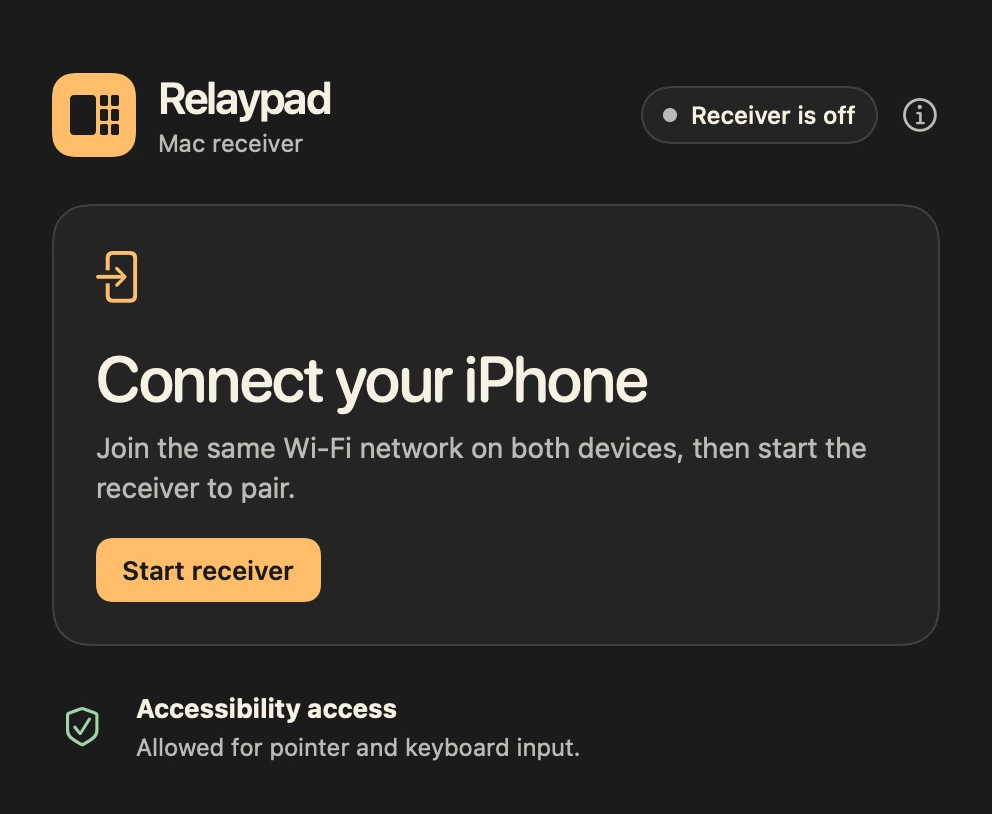

A Mac trackpad on your iPhone.
Move the pointer, click, and trigger voice-coding shortcuts. Seven customizable keys sit beside the trackpad, right under your thumb.
Get Relaypad

Get the apps
Install Relaypad on your iPhone and its receiver on your Mac. Check About This Mac to find your chip or processor.
iPhone
iOS 17+ · Source build available
Mac with Apple silicon
macOS 14+ · Source build available
Mac with Intel
macOS 14+ · Source build available
Pair over Wi-Fi
- Start the Mac receiver. Open Relaypad for Mac, click Start receiver, and allow Accessibility access so it can deliver your input.
- Choose your Mac. Join the same local network on both devices. Open Relaypad on your iPhone, tap Pair Mac, and enter the 12-character code from the receiver.
- Give it a try. Open TextEdit. Tap the pad to click in the document, then tap 1, 2, 3 and Space. Open the sliders button to assign your own shortcuts.

